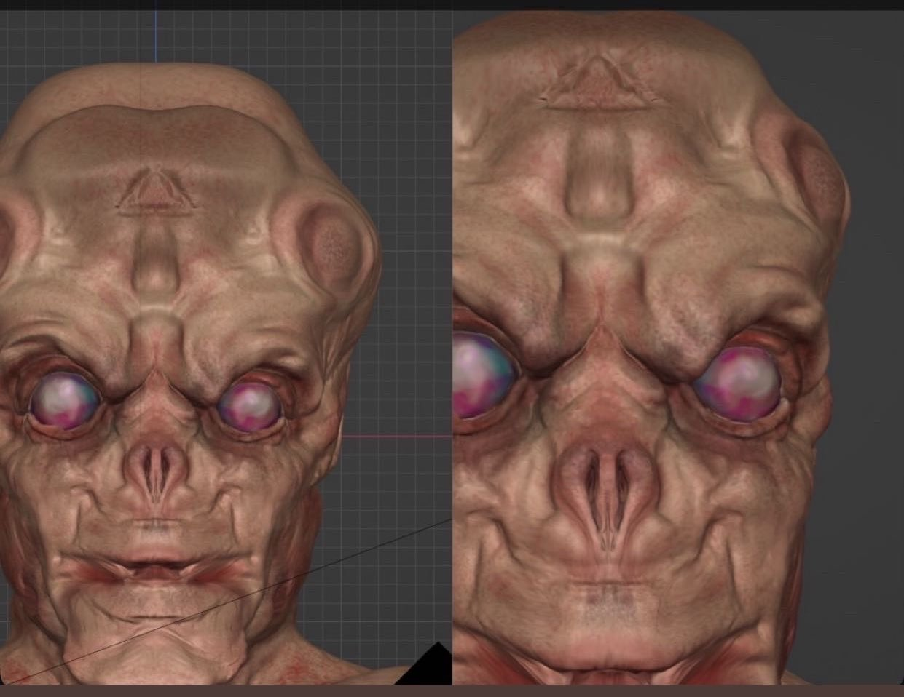
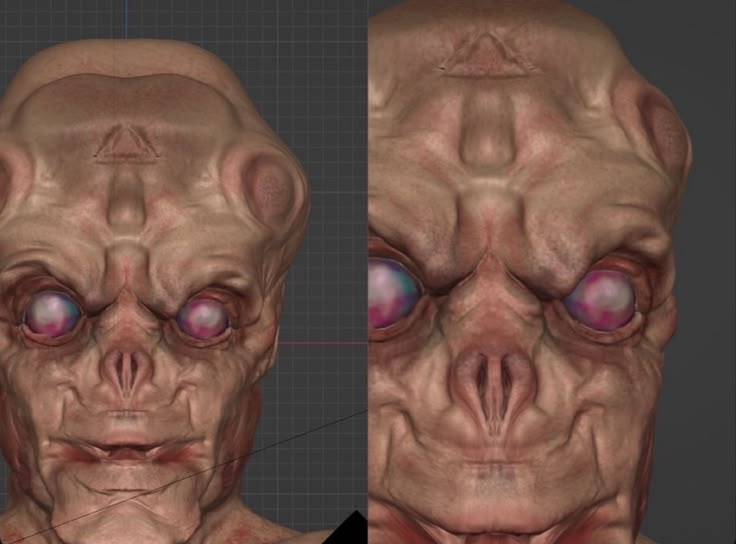
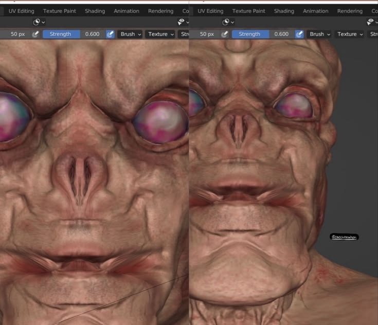
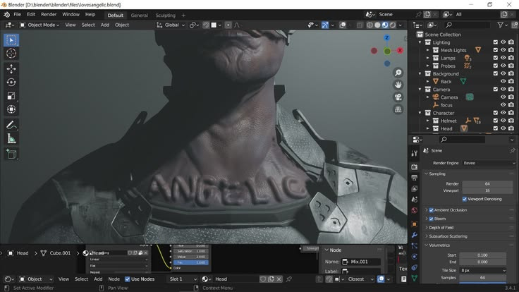
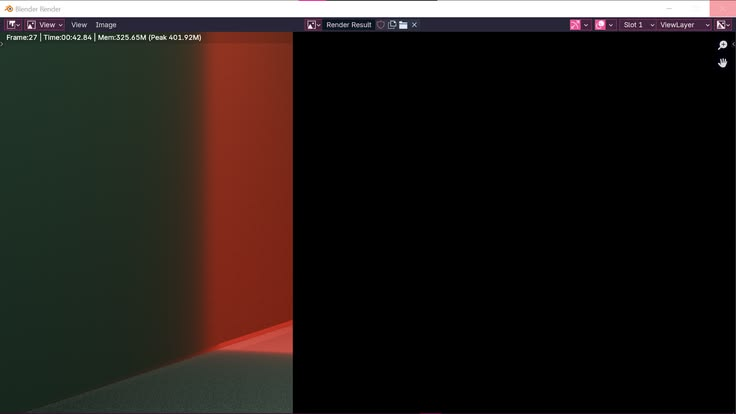
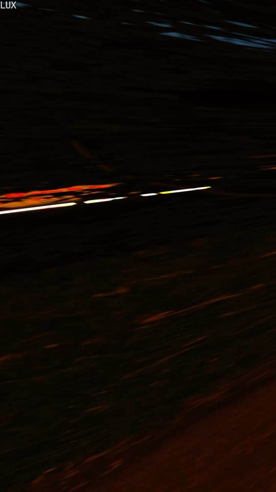

VISUAL ARCHIVE / 3D DESIGN
Blender 3D.
A visual archive of high-poly creature sculpting, anatomical studies, atmospheric environment worldbuilding, and cinematic lighting simulations created in Blender Cycles.
● 12 Selected Renders
Blender Cycles Engine
Organic Sculpting
Volumetric Lighting
CHAPTER 01
Organic Sculpting & Creature Anatomy
Digital clay sculpting, biological muscle topologies, skin tension folds, and morphological comparison studies.






CHAPTER 02
Environments, Lighting & Worldbuilding
Atmospheric shaders, volumetric scattering, snow and foliage materials, and cinematic night lighting studies.




